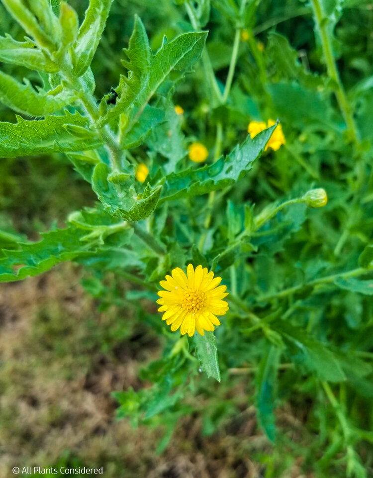
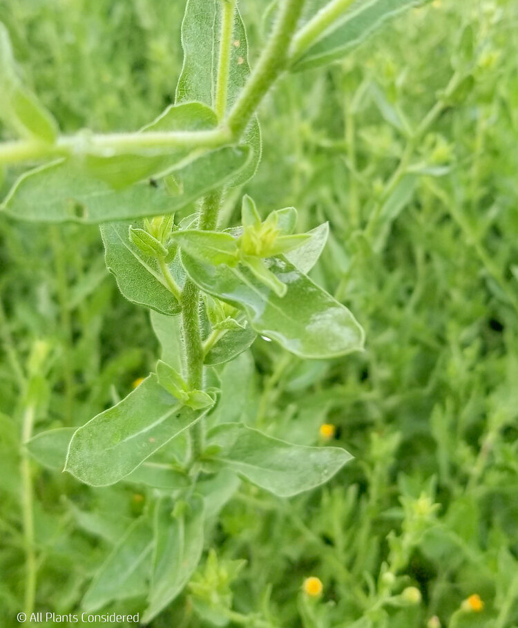
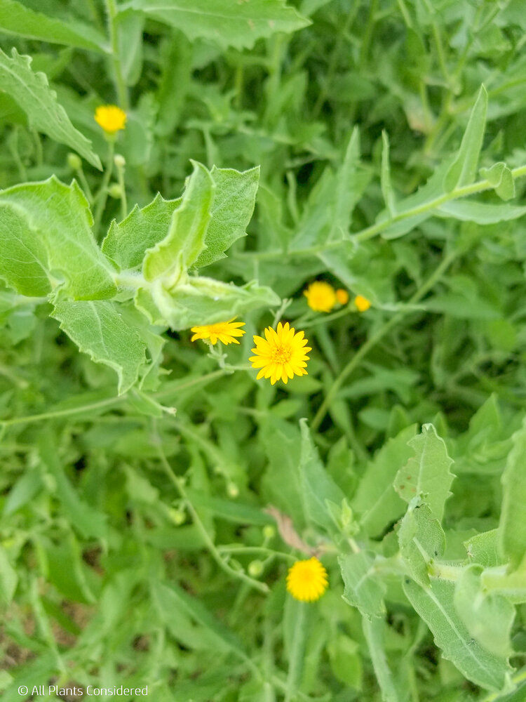

Camphorweed
Description: Camphorweed is commonly found across the southeastern United States. Its unassuming daisy-like yellow flowers with hairy stems and leaves often is overlooked in fields and yards. Plants can grow to 7 feet tall, are drought tolerant, and can overwhelm an area, giving it the weed designation by many. Note that in Kentucky there is a native threatened variety, so exercise caution and respect in that area.
Uses: When crushed, the leaves have a characteristic medicinal camphor smell. Camphorweed is beneficial for use on sprains or bruises and can reduce pain, swelling, and inflammation. Camphorweed lessens the reactive inflammation process, making it best for acute and painful injuries. Injuries with pain when resting are best treated with camphorweed.



